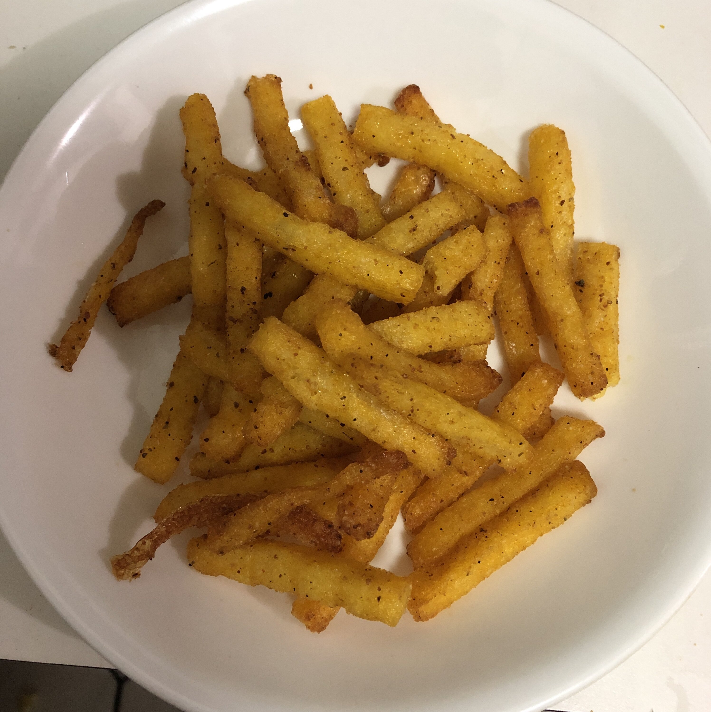

Caujun Fries

Description:
Pre-made polenta, Cajun seasoning, olive oil, and a little salt are all you need for these crispy polenta fries.
They are great right out of the oven but also good cold. Polenta fries are a healthier alternative than fries
made from potatoes; they have fewer carbs. Serve with a simple aioli, ketchup, or desired dipping sauce.
Ingredients:
- 2 tablespoons olive oil
- ½ teaspoon Cajun seasoning
- ½ (18 ounce) package prepared polenta, cut into 3/4-inch wedges
- salt to taste
Steps:
- Preheat an air fryer to 356 degrees F (180 degrees C).
- Combine oil and Cajun seasoning in a small bowl. Brush seasoned oil onto the polenta wedges with a pastry
brush. Sprinkle lightly with salt. Place the wedges into the bowl of the air fryer, overlapping slightly if
needed.
- Cook in the preheated air fryer for 10 minutes. Flip carefully with a silicone spatula. Cook, shaking basket
occasionally and using spatula if wedges stick, until crispy, 15 to 20 minutes more.